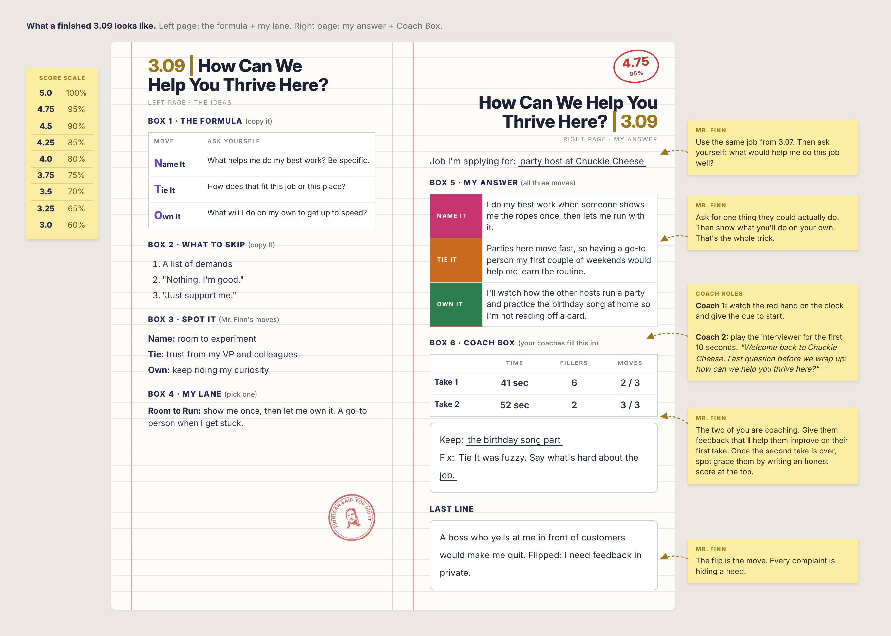

3.09 | How Can We Help You Thrive Here?
Purpose
This one sounds like a gift. It’s also a test.
They want to know how you work best.
And whether you’d actually fit here.
Ask for something real, then show you’ll pull your weight.
What a Finished Notebook Looks Like
Click the image to see it full size.

I. The Formula
| Move | Ask yourself |
|---|---|
| Name It | What helps me do my best work? Be specific. |
| Tie It | How does that fit this job or this place? |
| Own It | What will I do on my own to get up to speed? |
| Skip | Why |
|---|---|
| A list of demands | “Flexible hours, no weekends, and a parking spot.” You haven’t been hired yet. |
| “Nothing, I’m good.” | Sounds like you don’t need a team. They’re hiring for one. |
| “Just support me.” | With what? Give them something they could actually do. |
Mr. FinnI do my best work when I’m given room to maneuver; that is, freedom to experiment, to test things out, to play around with a variety of tools and techniques as I hone my craft.
For this job, that looks like a certain level of professional deference, or trust in me, from both my VP and my colleagues, to accomplish my aims for my students, even if in a roundabout, somewhat clumsy way at times.
How will I get there on my own? How I always have. I just keep riding my curiosity into the unknown with a mind toward growth and betterment. The tools I use are constantly being updated, so it’s a continual process of re-education.
II. Pick a Lane
Most good answers fall into one of these. Which one sounds like you?
“I do best when I know exactly what’s expected. If someone could walk me through what a good first month looks like, I’ll hit the ground running.”
“I work best around people I can bounce ideas off. If I can learn from the crew that’s been here a while, I’ll pick things up fast.”
“I like owning my tasks, but I learn faster with a go-to person when I get stuck. Having someone to ask in my first few weeks would be huge.”
- Pick your lane.
- Write it on your left page in your own words.
III. Write It
- Name It: what helps you do your best work, in one sentence.
- Tie It: connect it to the job you picked in 3.07.
- Own It: one thing you’ll do on your own.
- Read it under your breath with the clock. Aim for 45–60 seconds.
IV. Coach It
| Role | Job |
|---|---|
| Candidate | Answer the question like you’re in the interview. |
| Clock + Body Coach | Punch in on the second hand. Tally every “um,” “like,” and “ya know.” Watch eye contact. |
| Structure Coach | Did you hear Name It, Tie It, Own It? Pick one fix for Take 2. |
- Take 1: notebook open is fine.
- Coaches give one keep, one fix. “It was good” doesn’t count.
- Take 2: notebook closed. No peeking.
- Coaches fill in the Coach Box and write an honest score at the top.
- Rotate until everyone has played all three roles.
Coach Box
Copy this onto the bottom of your right page. Your coaches fill it in.
| Time | Fillers | Moves (of 3) | |
|---|---|---|---|
| Take 1 | |||
| Take 2 |
5.0 = in the window, 2 or fewer fillers, all 3 moves.
4.0 = one thing slipped.
3.0 = two takes, but missed the window and a move.
Coaches: back up your grade with a number from the box.
What’s one thing a boss could do that would make you want to quit? Flip it: what does that say you need?
V. Verbal Demo
Want to skip the written part? Call me over and give me your answer. I’ll grade it on the spot and give you feedback right away.
Fair warning: you get one retake. That’s it.
Success Looks Like
- Formula copied, three moves marked, lane picked
- Your answer: Name It, Tie It, Own It
- 2 takes, Coach Box filled in, grade settled